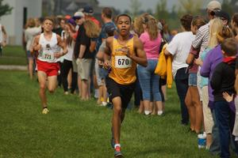
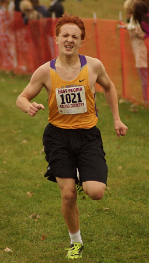

Elijah Hall
Running has been a hobby of mine since the 6th grade but it wasn't until I started running in college that I realized how my ability could help others. Going from middle school running to college competition was an experience full of experiences that transformed me into the runner I am today. With this website I aim to use these experiences that I have gained to further help others not only like myself but also the crowd of people who have little experience or knowledge of running in general.
Peter McCusker
After graduation from high school, I made it my mission to be the best runner that I could be. I began by training for 5k and 10k races but eventual set my sights on a marathon. 15 marathons later, it is safe to say that I have had my fair share of experience runnning. I've tried just about every possible combination of workouts for a runner and I've continually expanded my knowledge on the art of running. I realised throughout my running journey that most people have no idea how to run. I made it my mission to teach every prospective runner how to run their best and how to meet their goals.
Contact Us
Elijah Hall
- Email: ehallmony@hotmail.com
- Address: 69 Ocean Avenue, Abnormal, IL 64305
Peter McCusker
- Email: p_mccusker@outlook.com
- Address: 539 Bocoby Blvd, Rockport IL 67721